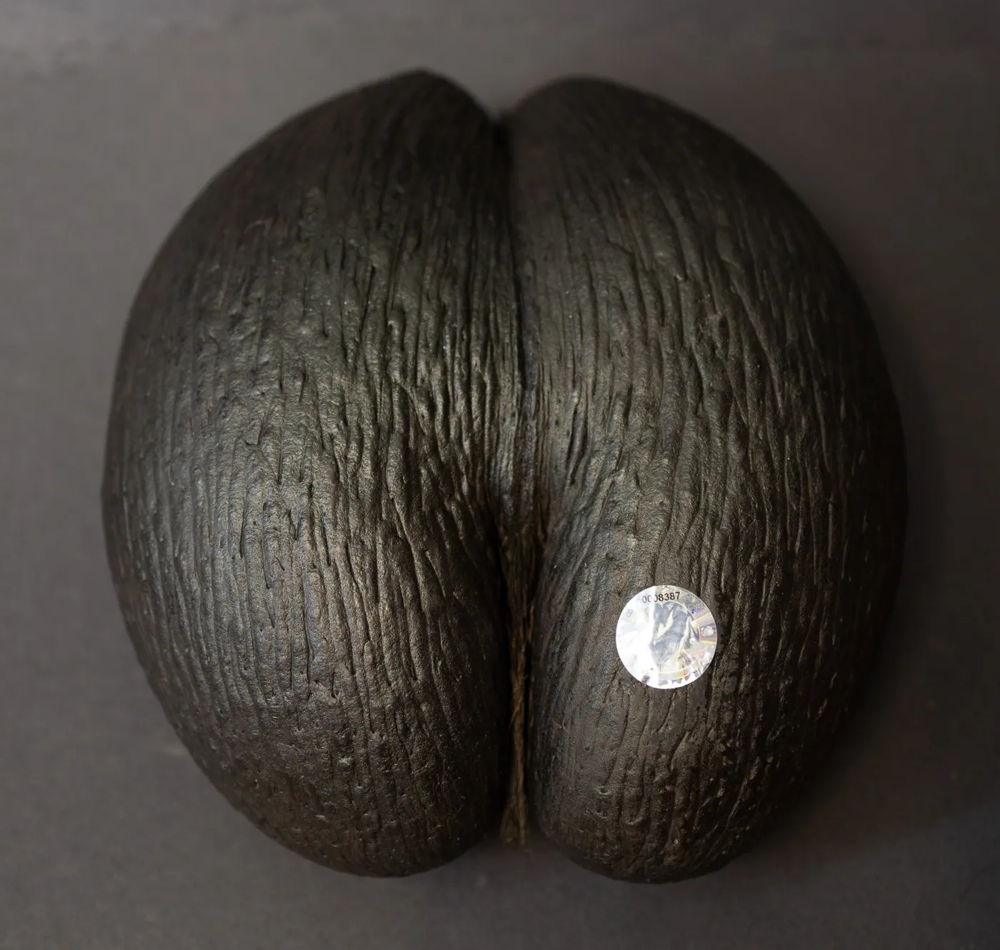

Tips for Buying the Coco de Mer

The Coco de Mer, known for its striking appearance and symbolic significance, has seen a significant rise in value over the years. In the 2007-2010 period, empty Coco de Mer nuts were priced around $200, but today, well-shaped, certified specimens sell for several times that. If you're considering investing in or acquiring one of these unique nuts, here are some essential tips for buying the Coco de Mer to ensure you make a worthwhile purchase.
Understanding the Market
The Coco de Mer trade has evolved considerably. Government pickers collect the full nuts, which are then processed by licensed operators who remove the kernel and reglue the nuts. Historically, the Island Scent Company on Mahé was a pioneer in the Coco de Mer kernel trade and remains the largest and most experienced exporter of Coco de Mer in the Seychelles. The company is also known for transforming some of the most beautiful nuts into art pieces, such as traditional Coco de Mer bowls (Cocotier) or polishing them for sale as natural art pieces.
What to Know Before You Buy
- Buy from Reputable Traders: To avoid purchasing damaged goods, only buy Coco de Mer from established and reputable traders. During the opening process, some nuts can get cracked, and damage might be concealed. Polished nuts, like those featured on the Coco de Mer Collection website, are the best way to check for any faults.
- Check Legal Requirements: If you're traveling to countries like France, the USA, Réunion, Australia, Germany, Canada, New Zealand, Mauritius, or China, you will need fumigation and phytosanitary certification for your Coco de Mer. The Coco de Mer Collection can assist with the necessary documentation and ensure compliance with legal requirements. Be sure to obtain the identification tag, typically silver, and corresponding documentation that proves the nut’s origin. Nuts without these tags cannot be exported and will be confiscated.
- Beware of Counterfeits: There are imitations in the market, including resin replicas that can resemble genuine Coco de Mer. Ensure that your purchase is authentic by buying from reputable sources and verifying the identification tag.
- Consider Shipping Options: If your luggage space is limited, you can use the shipping services provided by the Coco de Mer Collection. They offer convenient shipping solutions to deliver your nut directly to you.
Investment and Care
A Coco de Mer is not only a beautiful and unique piece of natural art but also a solid investment and a lasting gift for future generations. The outer shell’s hard wood is waterproof and resistant to termites. To maintain its pristine condition, regular care with beeswax will ensure that your Coco de Mer remains a cherished item for years to come.

Final Thoughts
The Coco de Mer Collection is renowned for its careful selection of the most beautiful nuts, assessing and cleaning them meticulously before sale. By following these tips and purchasing from trusted sources, you can make a valuable addition to your collection or gift a truly exceptional piece of nature’s artistry.